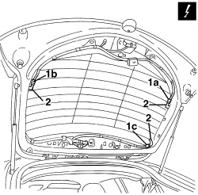
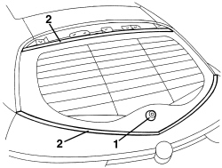
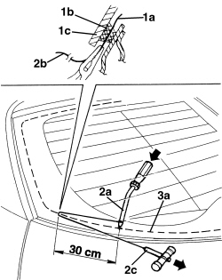
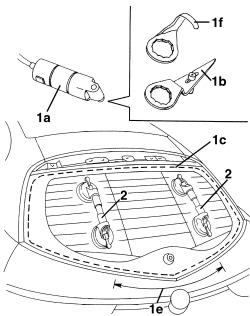
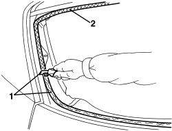
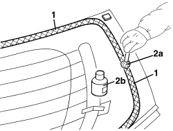
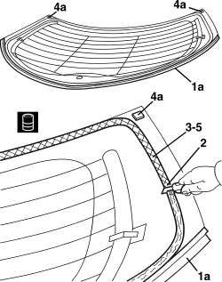
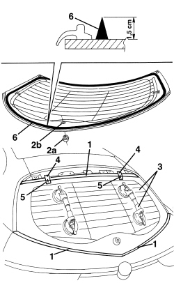
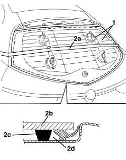

7035B14 REAR WINDOW GLASS - R.R INCLUDES CLEANING HOUSING
- Path
- Procedures > 70 FITTINGS > 7035 BODYSHELL WINDOWS AND SMALL WINDOWS > 7035B REAR WINDSCREEN > 7035B14 REAR WINDOW GLASS - R.R INCLUDES CLEANING HOUSING
- Kind
- repair procedure (removal / refitting; the operation number is the code)
- Applies to
- all engines; all production periods
- Interactive page
- https://sloeber94.github.io/elrnDB-aBrrSpdr/en/#/946002595
Applies to: all engines; all production periods
 Removing
Removing
 Refitting
Refitting- Remove the rear parcel shelf.
Op. 7015A06 TAILGATE UPPER INTERIOR PANEL - R.R.
Op. 7210G76 REAR SPOILER - R.R.
Op. 5050C34 REAR WIPER ARM WITH BLADE - R+R
Op. 7015A05 TAILGATE LOWER INTERIOR PANEL-R R
Op. 5050C42 REAR WIPER MOTOR - R+R
1. Disconnect the rearscreen electrical connections (1a, 1b, 1c).
Description | Component |
|---|---|
HEATED REAR WINDSCREEN |
- Move the rearscreen side electrical connections so that they are not damaged during the cutting of the sealant.
- Protect interior vehicle parts using an appropriate cover.

Applies to: all engines; all production periods
1. Remove the seal for the rearscreen wiper motor shaft.
2. Apply a double layer of adhesive tape to the body along the side and upper edges of the rearscreen.

Applies to: all engines; all production periods
- The rearscreen sealant can be cut using a wire or vibrating knife; both methods are described below.
- To cut using a piano wire, proceed as described below.
1. Cut a length of wire of about 50 cm then, with the help of pliers, introduce one end (1a) of the wire through the bead of sealant (1b) securing the rearscreen (1c).
2. Fasten one end (1a) of the wire to the special retaining tool (2a) located inside the vehicle. Fasten one end (2b) of the wire to the traction handle (2c) located outside the vehicle.
3. The mechanic inside the vehicle should keep the end of the tool (2c) on the bead of sealant (3a) about 30 cm from the point where the wire passes through. The other mechanic, outside the vehicle, should pull the handle (2c) following the surround of the rearscreen and they should cut the bead of sealant (3a). Repeat the operation in sections of about 30 cm until the bead of sealant (3a) is completely cut. Take care when cutting over the rearscreen side centering pins (3b).

Applies to: all engines; all production periods
- To cut using a vibrating knife, proceed as described below.
1. Using vibrating knife (1a) and working from inside the vehicle with blade (1b), cut sealant strip (1c) around the edge of the rearscreen except for area (1e) where it is ncessary to cut the strip (1c) from outside using blade (1f).
2. After cutting round the entire sealant strip, apply suction pads to the rearscreen; then, with the assistance of a second mechanic, remove the rearscreen and rest it on a support stand.

Applies to: all engines; all production periods
Refitting
Removing1. Using suitable equipment, cut and level the bead of sealant in the rearcreen housing leaving a thickness of between 0.25 and 1 mm, taking care not to scratch the paintwork. The thickness of the sealant remaining in the housing will act as a support for the new bonding.
2. Thoroughly clean the rearscreen housing using an air jet and degrease fully using heptane. When bonding, 60 minutes after the bead of sealant has been cut and levelled, the surface of the actual sealant must be treated using the special activating product and it is necessary to wait for 15 minutes before fitting the windscreen.
Component | Type | Description | Classification | Qty. | Validity |
|---|---|---|---|---|---|
Rear windscreen glass | Activator for PUR | - | - | - |
- If necessary, touch up the paintwork.

Applies to: all engines; all production periods
- New rearscreen preparation.
1. Degrease the screen-printed perimeter of the new rearscreen involved in the bonding using heptane.
2. Apply the glass adhesion promoter (primer) (2b) to the serigraphed perimeter using the wick (2a) supplied in the Kit.

Applies to: all engines; all production periods
- Preparing a removed rearscreen.
1. A removed rearscreen is reusable only if it did not suffer damage during removal. In particular, seal (1a) present along the lower edge must be intact.
2. Using suitable equipment cut and level the bead of sealant on the rearscreen so that it is as thin as possible. The remaining sealant does not have to be completely removed; take care not to damage the black serigraphy on the glass perimeter.
3. Clean the perimeter of the serigraphed area of the windscreen thoroughly with compressed air and degrease it using heptane.
Check that the glass is not damaged.
4. Apply spacer pads (4a) to the rear screen.
5. When bonding, 60 minutes after the bead of sealant has been cut and levelled, the surface of the actual sealant must be treated using the special activating product and it is necessary to wait for 15 minutes before fitting the rearscreen.
Component | Type | Description | Classification | Qty. | Validity |
|---|---|---|---|---|---|
Rear windscreen glass | Activator for PUR | - | - | - |

Applies to: all engines; all production periods
1. Remove the adhesive tape from the edges of the bodywork.
2. Fit seal (2a) to hole (2b) through which rear wiper motor passes.
3. Carry out a test fitting and centre the rearscreen perfectly.
4. When the rearscreen has been centered, mark the position of the rearscreen in relation to the housing using strips of adhesive tape.
5. Cut the strips of adhesive tape and remove the rearscreen.
6. Using a spray gun apply a bead of sealant along the perimeter of the rearscreen as evenly as possible.
Component | Type | Description | Classification | Qty. | Validity |
|---|---|---|---|---|---|
Rear windscreen glass | Windscreen sealant | Product n° 71711976 | - | - |

Applies to: all engines; all production periods
1. Place the rearscreen window (1a) in the housing with the assistance of a second mechanic immediately after applying the sealant and let it bed in.
2. Position the belt (2a), as illustrated, and tension it so that even pressure is exerted on the entire rearscreen to ensure that the matching between the glass (2b), sealant (2c) and rearscreen housing (2d) is correct.

Applies to: all engines; all production periods
- Before refitting the vehicle interior and exterior elements, check that there are no infiltration points by carrying out a water leakage test.
- Connect the rearscreen electrical connections.
Op. 5050C42 REAR WIPER MOTOR - R+R
Op. 7015A05 TAILGATE LOWER INTERIOR PANEL-R R
Op. 5050C34 REAR WIPER ARM WITH BLADE - R+R
Topics linked from this page (6)
- 5050C34 REAR WIPER ARM WITH BLADE - R+R
- 5050C42 REAR WIPER MOTOR - R+R
- 7015A05 TAILGATE LOWER INTERIOR PANEL-R R
- 7015A06 TAILGATE UPPER INTERIOR PANEL - R.R.
- 7210G76 REAR SPOILER - R.R.
- P055 HEATED REARSCREEN
Topics that link to this page (6)
- J021 HEATED REAR WINDSCREEN NOT WORKING
- V002 PASSENGER COMPARTMENT WATER PENETRATION, REAR AREA
- 7035B04 REAR WINDSCREEN - ELIMINATE LEAKS
- 7205E56 STRIPPING TAILGATE
- E3030 REAR SCREEN AND REAR VIEW MIRROR DEMISTING - WIRING DIAGRAM
- E3030 REAR SCREEN AND REAR VIEW MIRROR DEMISTING - COMPONENT LOCATION